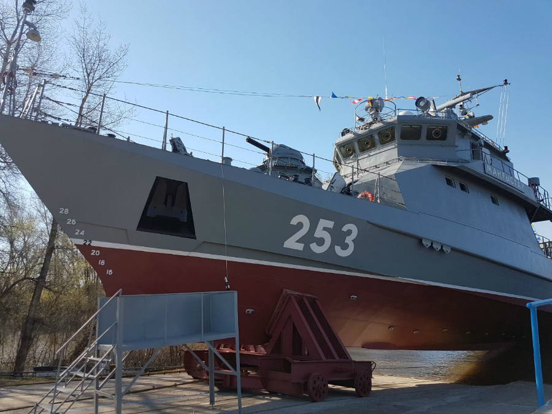
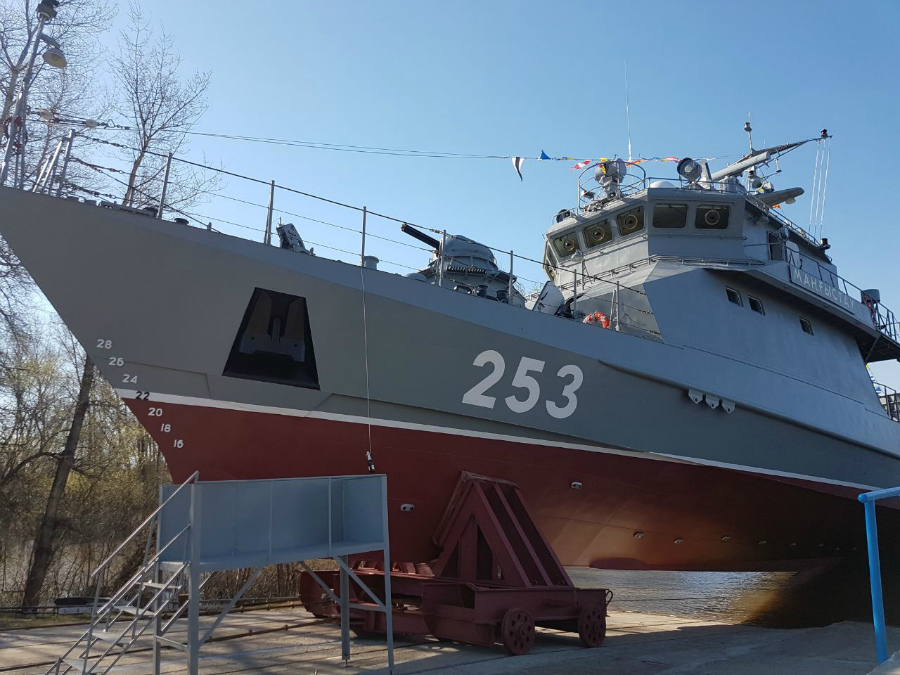

Завод "Зенит"
Единственный в своем роде завод во всем Казахстане
Сарайшык 28, Уральск
Что из себя представляет завод?
Завод "Зенит" - это гордость нашего Уральска. Он является лидером среди, судостроительных предприятии Казахстана, и единственным в своем роде заводом во всей стране. Это уникальное предприятие стало продолжателем славных традиций грозных военных лет. И в послевоенный период и в настоящее время АО «Уральский завод «Зенит»» на высоком уровне решает стоящие перед ним важные государственные задачи. Зенит, также известный как завод внесший, весомый вклад в победу над врагом во время войны. В следствии чего и награжден орденом Отечественной войны 1 степени.
- Год открытия — 1941 год, 12 сентября
- Общая площадь завода — 21 гектар
- Производственная площадь — 74 тыс.кв.м
- Число рабочих — около 1000 человек
- Кораблей произведено — 30
 

История завода
История Зенита очень насыщенна и богата! Вместе со временем менялся сам завод, менялись цели и менялись даже владельцы завода.
Её основа была положена в 1921 году в Ленинграде. Позже в 1941 году завод был эвакуирован в Уральск. Во время войны завод выпускал специальное военно-морское вооружение и служил крепкой опорой для солдат. Изначально завод использовался для военных нужд и был известен под засекреченными названиями «Завод-231», «Почтовый ящик-38». В 1966—1991 годах завод именовался «Машиностроительный завод имени К.Е. Ворошилова». С 1996 года её объявили акционерным обществом. После модернизации завод получил возможность выпускать суда водоизмещением до 500 тон.
Производство кораблей
Деятельность завода менялось в соответствии со временем. В начальные годы войны, когда завод только-только основался, они производили все подряд. Начиная от бытовых изделий, до морских подрывных бомб.
В нынешнее время завод специализируется на выпуске продукции судостроения. Основные работы: катера проекта 100 «Сұңқар» (Сункар), проекта 0200 «Бүркіт» (Беркут), проекта «FC-19», проекта 0210 «Айбар» и корабли проекта 0300 «Барс», проекта 250 «Барс-МО». Все эти катера и корабли выпускаются в рамках государственного оборонного заказа предприятия. Также, они проводят их техническое обслуживание, ремонт и модернизацию. Кроме этого производит специальную технику, выполняет заказы по изготовлению оборудования и оказанию услуг для нефтегазовой и других отраслей промышленности, а также выпускает пользующуюся спросом гражданскую продукцию.
О рабочих
За продвижение и реализацию идей отвечает сердце нашего завода – рабочие. Эта деятельность так не процветала бы, если бы не наша рабочая сила в виде большой группы специалистов.
Не смотря, на то, что среди работы специалистов завода преобладает физическая нагрузка, без специального образования и хорошей базы знаний такие процессы невозможны! Ведь умение читать чертежи, продумывать технику безопасности и составлять план корабля – нелегкое дело. Все, абсолютно все трудящиеся в нашем заводе - высококвалифицированные специалисты. Требования к ним очень высокие, так как именно от их усилий зависит не только будущее Казахстана, но и будущее всего мира!
Изменения за карантин
Пандемия и карантинный режим сильно сказались и на нашей организации. Изменения и новые стандарты не обошли и нас стороной.
В связи с карантином много чего успело поменяться. Во-первых, начнем с введения масочного режима и сокращения времени работы. Во-вторых, скорость выполнения работ снизилась из-за дефицита времени. Но никто не вздумал унывать! Все рабочие продолжают работать в прежнем темпе и пытаются навязать борьбу вирусу. Они начали выкладываться на полную и продуктивно использовать время. Удивляет тот факт, что они стараются прилагая всевозможные усилия даже в разгар пандемии!
Планы на будущие
На данный момент ведутся несколько проектов по приказу государственных органов: водное судно по проекту АЙБАР 2 и катер проекта Сункар. По окончанию работы на заводе планируется глобальная модернизация и возможно перестройка цехов, так как с 1941 года на заводе мало что поменялось. Планируется обновление комплектующих и заказ новой техники. Возможна вероятность добавления еще нескольких цехов, потому что главный директор Валиев Вячеслав Хамзиевич хочет увеличить продуктивность и возможность работать над несколькими проектами одновременно.
Путешествие до завода
По мотивам авиакомпании AirAstana, добраться до нас вы можете с любой точки Мира.